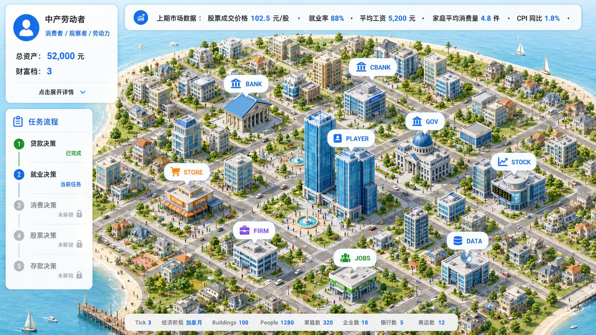

Strategic Focus Project | 2026.03 - 2028.03
Economic World Model
A foundation-model and LLM-agent platform for social and market simulation, designed to turn economic systems into controllable, reproducible, and explainable digital sandboxes.
Led by Prof. Lin William Cong, the project defines an Economic World Model as a co-evolving system of agents and environments. It models endogenous market feedback, heterogeneous preferences, institutional rules, and reflexive belief updates so that policies, investment strategies, enterprise decisions, and mechanism designs can be tested before real-world deployment.
